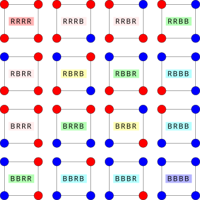

Pólya 计数
前置知识：置换和排列
引入
Pólya 计数原理通常用来解决一些涉及「本质不同」的计数问题．
本文可能涉及群论的相关内容
本文可能涉及到群论的相关内容．本文会对涉及到的群论概念做简单的解释，以便于不熟悉相关内容的读者理解和应用 Pólya 计数原理．关于群论的内容，严格的表述和讨论请参考 抽象代数基本概念、群论 等章节．
「空间对称群」、「对称群」与「置换群」
本文中将不可避免地同时使用这三类群的名字．尽管可能很容易造成混淆，但它们确实代指不同的概念．给定几何结构，它上面的对称操作指的是能够使它与它自身重合的几何变换，而空间对称群（symmetry group）就是这些对称操作的集合．对称群（symmetric group）是给定集合上的全体置换的集合．置换群（permutation group）则是对称群的子群，即一些（未必是全体）置换构成的群．后文会解释如何将给定几何结构的空间对称群表示成置换群的形式，并用于计数问题．
Burnside 引理
相关阅读：Burnside 引理
Pólya 计数原理是 Burnside 引理的应用和推广．在介绍 Pólya 计数原理之前，需要先简单地回顾 Burnside 引理的内容．
为了总结出一般的规律，首先考虑简单的例子．
项链染色
现在有一串共四个珠子的项链，每个珠子可以是红色或者蓝色，计算共有几种本质不同的珠子．（如果两种染色的结果可以通过旋转项链重合，就认为是相同的．)
解答和分析
这个问题足够简单，可以通过枚举的方式加以解答．珠子共计 44 个，每个珠子可以染 22 种颜色，所以，项链所有可能的染色方案共计 24 =1624=16 种．将可以通过旋转相互得到的分到一组，共计 66 组，如下图所示．（其中，单个染色方案的编码表示了自左下角的珠子开始顺时针染的颜色，𝐵B 表示蓝色，𝑅R 表示红色；分到同一组的染色方案的编码有着相同的背景颜色．）
个，每个珠子可以染 22 种颜色，所以，项链所有可能的染色方案共计 24 =1624=16 种．将可以通过旋转相互得到的分到一组，共计 66 组，如下图所示．（其中，单个染色方案的编码表示了自左下角的珠子开始顺时针染的颜色，𝐵B 表示蓝色，𝑅R 表示红色；分到同一组的染色方案的编码有着相同的背景颜色．）

从这个例子中可以看到，要计算本质不同的染色的种类数，关键其实是知道每种本质相同的染色对应几种不同的染色方案．也就是说，要搞清楚上图中每个分组的大小．
能够分到同一个组中的染色方案，就是指它们之间能够通过旋转操作互相转化的染色方案．总共有 44 种旋转的方式，即
𝐺={𝑟0,𝑟1,𝑟2,𝑟3},G={r0,r1,r2,r3},
分别表示旋转 0,1,2,30,1,2,3 次．旋转 00 次就是原地不动．
首先看染色方案 𝑅𝑅𝐵𝐵RRBB 所在的分组．对它施加这四种操作，将分别得到
𝑅𝑅𝐵𝐵,𝑅𝐵𝐵𝑅,𝐵𝐵𝑅𝑅,𝐵𝑅𝑅𝐵.RRBB,RBBR,BBRR,BRRB.
四种染色方案互不相同，因此这个组就有 44 个元素．
再看染色方案 𝐵𝑅𝐵𝑅BRBR 所在的分组．对它同样施加这四种操作，将分别得到
𝐵𝑅𝐵𝑅,𝑅𝐵𝑅𝐵,𝐵𝑅𝐵𝑅,𝑅𝐵𝑅𝐵.BRBR,RBRB,BRBR,RBRB.
此时，旋转两次的结果和不旋转的结果是一致的，旋转三次和旋转一次的结果是一致的．所以，这个组就有 22 个元素．
如果看染色方案 𝐵𝐵𝐵𝐵BBBB 和 𝑅𝑅𝑅𝑅RRRR 所在的分组．对它们施加四种操作得到的结果都是它们自身．因而，每个组就只有 11 个元素．
如果用 𝑥x 表示染色方案，𝐺𝑥Gx 表示对染色方案 𝑥x 操作后能够得到的颜色编码的集合，那么从上面的例子可以总结出一个规律，那就是 𝐺G 的操作对于 𝑥x 的影响存在某种「周期性」．
设 |𝐺||G| 表示操作的总个数，这种影响的「周期性」意味着，如果有 𝑚m 个不同的 𝐺G 中的操作将染色方案 𝑥x 变换到它自身，那么 𝑥x 在这些操作下的结果就会重复出现 𝑚m 次．因而，染色方案 𝑥x 在这些操作下共计有 |𝐺|/𝑚|G|/m 种不同的结果，这也就是 𝑥x 所在分组的大小．
这个例子中，因为只有旋转零次 𝑟0r0 才能够将 𝑅𝑅𝐵𝐵RRBB 变换到它自身，所以，它所在分组的大小等于 4/1 =44/1=4；而旋转零次 𝑟0r0 和两次 𝑟2r2 都能将 𝐵𝑅𝐵𝑅BRBR 变换到它自身，所以，它所在分组的大小等于 4/2 =24/2=2；无论旋转几次都能将 𝐵𝐵𝐵𝐵BBBB 变换到它自身，所以，它所在分组的大小就是 4/4 =14/4=1．
在下面的叙述中，用 𝐺𝑥Gx 表示能够将 𝑥x 变换到它自身的操作的数目，所以，|𝐺𝑥||Gx| 就是上面的 𝑚m．此时，𝑋X 所在分组大小是 |𝐺|/|𝐺𝑥||G|/|Gx|．要计算染色方案的分组的数目，只需要穷举所有可能的染色方案 𝑥 ∈𝑋x∈X，对所在分组大小为 |𝐺𝑥||Gx| 的染色方案 𝑥x 赋以权重 1/|𝐺𝑥|1/|Gx|，就能够将分组的数目表达为
|𝑋/𝐺|=∑𝑥∈𝑋1|𝐺𝑥|=∑𝑥∈𝑋|𝐺𝑥||𝐺|.|X/G|=∑x∈X1|Gx|=∑x∈X|Gx||G|.
现在这个式子的形式并不便于应用．记 𝑔𝑥gx 是对染色方案 𝑥 ∈𝑋x∈X 应用操作 𝑔 ∈𝐺g∈G 的结果，那么上面描述的集合 𝐺𝑥Gx 就是 {𝑔 ∈𝐺 :𝑔𝑥 =𝑥}{g∈G:gx=x}，所以交换求和顺序就有
∑𝑥∈𝑋|𝐺𝑥|=∑𝑥∈𝑋|{𝑔∈𝐺:𝑔𝑥=𝑥}|=∑𝑥∈𝑋∑𝑔∈𝐺[𝑔𝑥=𝑥]=∑𝑔∈𝐺∑𝑥∈𝑋[𝑔𝑥=𝑥]=∑𝑔∈𝐺|{𝑥∈𝑋:𝑔𝑥=𝑥}|=∑𝑔∈𝐺|𝑋𝑔|.∑x∈X|Gx|=∑x∈X|{g∈G:gx=x}|=∑x∈X∑g∈G[gx=x]=∑g∈G∑x∈X[gx=x]=∑g∈G|{x∈X:gx=x}|=∑g∈G|Xg|.
其中 [ ⋅][⋅] 为 Iverson 括号．交换求和记号的结果中，𝑋𝑔 ={𝑥 ∈𝑋 :𝑔𝑥 =𝑥}Xg={x∈X:gx=x} 是指在操作 𝑔g 下保持不变的染色方案 𝑥x 的集合．简言之，它是操作 𝑔g 的不动点．
在这些讨论之后，现在可以将分组的个数写作
|𝑋/𝐺|=1|𝐺|∑𝑔∈𝐺|𝑋𝑔|.|X/G|=1|G|∑g∈G|Xg|.
也就是说，分组的个数是各种旋转操作的不动点的平均个数．
作为这个结果的应用，再次计算项链染色的个数．这些旋转操作的不动点可以列举如下．
| 操作 | 不动点 |
|---|---|
| 𝑟0r0 | 𝑋X |
| 𝑟1r1 | {𝐵𝐵𝐵𝐵,𝑅𝑅𝑅𝑅}{BBBB,RRRR} |
| 𝑟2r2 | {𝐵𝐵𝐵𝐵,𝐵𝑅𝐵𝑅,𝑅𝐵𝑅𝐵,𝑅𝑅𝑅𝑅}{BBBB,BRBR,RBRB,RRRR} |
| 𝑟3r3 | {𝐵𝐵𝐵𝐵,𝑅𝑅𝑅𝑅}{BBBB,RRRR} |
因而，分组的个数就等于
16+2+4+24=6.16+2+4+24=6.
这样就得到了前面的结果．
从这个例子中，可以归纳出一般的结果，用于求解这类计数问题．为了方便讨论，本文考虑的情景是染色问题，当然也可以应用到别的情景上去，在文末会提供相应的例子．
染色问题是说，给定某个结构，在它的每个顶点上染色，会得到不同的染色方案．这个结构拥有某种对称性，使得看似不同的染色方案在经过一系列对称操作后能够互相转化．这些能互相转化的染色方案就称为本质相同的．问题是要求解本质不同的染色的数目．
根据例子中的分析，要求解这样的问题，首先要讨论给定的结构都有哪些对称操作．这些对称操作的集合 𝐺G 称为给定结构的空间对称群．实际应用中，大多时候无需了解群的定义，只需要能够不重不漏地讨论所有的空间对称操作就可以了．本文后面分析了几个常见的空间对称群的结构，那里解释了群的定义．
所有染色方案的集合记作 𝑋X，其中的单个染色方案记作 𝑥x．操作 𝑔 ∈𝐺g∈G 作用在染色方案 𝑥 ∈𝑋x∈X 的结果是 𝑔𝑥gx．那么，能够通过某个操作作用在染色方案 𝑥x 上的所有结果就是 𝐺𝑥 ={𝑔𝑥 :𝑔 ∈𝐺}Gx={gx:g∈G}，它称为群 𝐺G 作用下 𝑥x 的轨道．同一轨道中的不同染色方案就是这类问题中所谓「本质相同」的．故而，所有本质不同的染色的数目，就等价于不同轨道的数目．
例子中的分析可以推广到一般的情形．
Burnside 引理
给定群 𝐺G 在集合 𝑋X 上的作用，则所有不同的轨道的数目
|𝑋/𝐺|=1|𝐺|∑𝑔∈𝐺|𝑋𝑔|.|X/G|=1|G|∑g∈G|Xg|.
这里，𝑋𝑔 ={𝑥 ∈𝑋 :𝑔𝑥 =𝑥}Xg={x∈X:gx=x} 是 𝑔 ∈𝐺g∈G 的作用下的不动点集合．
它的证明几乎就是照搬上面例子中的分析．但是，例子中用到了观察，即群 𝐺G 在单个元素 𝑥x 上的作用结果具有某种「周期性」，所以，这种周期重复的数目就等于能将 𝑥x 变换到它自身的操作的数目．这个观察在一般的情形是正确的，但是因为群 𝐺G 的结构可能很复杂，它的「周期性」未必是例子中呈现的那么直接．严格地表述这个观察，需要用到群论中的 轨道稳定子定理（orbit-stabilizer theorem）．
在应用的时候，只要能够列举出所有的对称操作，并且给出每个对称操作对应的不动点数目就可以解决对应的计数问题．下面是一个稍微复杂的应用．
立方体染色
用三种颜色给一个立方体染色，求本质不同的方案数（经过空间旋转后相同的两种方案视为同一种）．
解答
因为立方体有 66 个面，每个面有 33 中染色方法，所以，总共有 3636 种染色方案，即 |𝑋| =36|X|=36．记立方体的空间对称群为 𝐺G．

接下来我们需要对 𝐺G 中的所有操作进行分析，它们可以分为以下几类（方便起见，将立方体的六个面分别称为前、后、上、下、左、右）：
- 不动：即恒等变换，因为所有直接染色方案经过恒等变换都不变，因此它对应的 |𝑋𝑔| =36|Xg|=36；
- 以两个相对面的中心连线为轴的 90∘90∘ 旋转：相对面有 33 种选择，旋转的方向有 22 种选择，因此这类共有 66 个置换．假设选择了前、后两个面中心的连线为轴，则必须要满足上、下、左、右四个面的颜色一样，才能使旋转后不变．此时，有 33 个可以独立染色的区域，因此它对应的 |𝑋𝑔| =33|Xg|=33；
- 以两个相对面的中心连线为轴的 180∘180∘ 旋转：相对面有 33 种选择，旋转方向的选择没有影响，因此这类共有 33 个置换．假设选择了前、后两个面中心的连线为轴，则必须要满足上、下两个面的颜色一样，左、右两个面的颜色一样，才能使旋转后不变．此时，有 44 个可以独立染色的区域，因此它对应的 |𝑋𝑔| =34|Xg|=34；
- 以两条相对棱的中点连线为轴的 180∘180∘ 旋转：相对棱有 66 种选择，旋转方向对置换依然没有影响，因此这类共有 66 个置换．假设选择了前、上两个面的边界和下、后两个面的边界作为相对棱，则必须要满足前、上两个面的颜色一样，下、后两个面的颜色一样，左、右两个面的颜色一样，才能使旋转后不变．此时，有 33 个可以独立染色的区域，因此它对应的 |𝑋𝑔| =33|Xg|=33；
- 以两个相对顶点的连线为轴的 120∘120∘ 旋转：相对顶点有 44 种选择，旋转的方向有 22 种选择，因此这类共有 88 个置换．假设选择了前面的右上角和后面的左下角作为相对顶点，则必须满足前、上、右三个面的颜色一样，后、下、左三个面的颜色一样，才能使旋转后不变．此时，有 22 个可以独立染色的区域，因此它对应的 |𝑋𝑔| =32|Xg|=32．
因此，所有本质不同的染色方案数为
1×36+6×33+3×34+6×33+8×321+6+3+6+8=57.1×36+6×33+3×34+6×33+8×321+6+3+6+8=57.
Pólya 计数原理
在 Burnside 引理的叙述中，并没有用到集合 𝑋X 是某结构上的全部染色方案这一性质．其实，Burnside 引理的应用范围并不局限于染色计数问题．对于染色计数问题，Pólya 计数原理则提供了更为准确的计算方法．它可以看作是一般性的 Burnside 引理在染色计数问题上的应用．
相较于 Burnside 引理，Pólya 计数原理的改进就是提供了不动点集合大小 |𝑋𝑔||Xg| 在染色计数问题中的具体计算方法．
这一点从上面的立方体染色的例子可以直观地看出来．对于正方体的各种对称操作，它的不动点集合的大小都是 𝑚𝑐(𝑔)mc(g) 的形式，这里 𝑚m 是颜色的数目，𝑐(𝑔)c(g) 是在操作 𝑔g 下可以独立染色的区域数目．这个观察在一般的情形下也是成立的，不过需要进一步明晰如何对给定的 𝑔g 计算 𝑐(𝑔)c(g) 的取值．
给某个结构选择一种染色方案，用数学语言表示，就是选择一个从这个结构的可以染色的对象（比如项链中的珠子、立方体的面等）的集合 𝑋X 到颜色集合 𝐶C 的映射 𝑓 :𝑋 →𝐶f:X→C．因此，染色方案的集合就是 𝐶𝑋CX．该结构的空间对称群 𝐺G 作用在结构上，自然也连带着作用在集合 𝑋X 上．这种对称操作，总对应着集合 𝑋X 上的双射，即 置换 （permutation）．1
现在分析不动点集合 (𝐶𝑋)𝑔(CX)g 的结构．给定 𝑔g，看作 𝑋X 上的置换，比照例子中的分析可以知道，如果 𝑋X 中的位置 𝑥x 在有限次重复操作 𝑔g 之后可以移动到位置 𝑦y，那么，作为不动点 𝑓 ∈(𝐶𝑋)𝑔f∈(CX)g，必然需要满足 𝑓(𝑥) =𝑓(𝑦)f(x)=f(y)．用上一节轨道的语言来说，因为位置 𝑥x 和位置 𝑦y 处于操作 𝑔g 作用2的同一个轨道上，所以它们需要染相同的颜色．用置换的语言来说，在置换 𝑔g 的 轮换分解 中，位置 𝑥x 和位置 𝑦y 处于同一轮换，故而需要染相同的颜色．轮换分解中不同的轮换的染色不必相同，可以独立染色，所以此时可以独立染色的区域数目就是 𝑐(𝑔)c(g)，即 𝑔g 的轮换分解中的轮换数目．
由此，操作 𝑔g 的不动点的数目就是 |𝐶|𝑐(𝑔)|C|c(g)．将这个结论代入 Burnside 引理，就能得到无权重版本的 Pólya 计数原理 （Pólya enumeration theorem）．
Pólya 计数原理（无权重版本）
给定群 𝐺G 在集合 𝑋X 上的作用和颜色集合 𝐶C，则不同的染色方案的数目
|𝐶𝑋/𝐺|=1|𝐺|∑𝑔∈𝐺𝑚𝑐(𝑔),|CX/G|=1|G|∑g∈Gmc(g),
这里，𝑚m 是颜色数目，𝑐(𝑔)c(g) 是元素 𝑔 ∈𝐺g∈G 的置换表示的轮换分解中的轮换数目．
关于群 𝐺G 的含义
这里略微有些滥用记号．如果群 𝐺G 作用在 𝑋X 上，那么染色方案集合 𝐶𝑋CX 上的群作用是需要重新定义的，这里没有加以区分．
作为 Pólya 计数原理的简单应用，下面重新用 Pólya 计数原理计算前文的例子．
项链染色问题另解
将四个珠子标号 1 ∼41∼4，则例子中的群 𝐺G 中的元素分别有置换表示如下：（均写作轮换分解的形式）
- 旋转零次 𝑟0 =(1)r0=(1)，共计 44 个轮换（注意省略的 11‑轮换）；
- 旋转一次 𝑟1 =(1234)r1=(1234)，共计 11 个轮换；
- 旋转二次 𝑟2 =(13)(24)r2=(13)(24)，共计 22 个轮换；
- 旋转三次 𝑟3 =(1432)r3=(1432)，共计 11 个轮换．
因此，本质不同染色的数目是
24+21+22+214=6.24+21+22+214=6.立方体染色问题另解
由于前文的分析实质上已经给出了各类置换的轮换表示，只是没有用数字符号显式地书写出来，这里不再重复前文的分析．仅仅考虑以相对棱的中点连线为轴的 180∘180∘ 旋转的情形，加以示例．将前、后、上、下、左、右六个面依次编号为 1 ∼61∼6，此时对应的置换是 (13)(24)(56)(13)(24)(56)，因此 𝑐(𝑔) =3c(g)=3．其它类型的置换也可以类似分析，最后的计数的表达式也和上文完全一致．
带权重形式的推广
无权重版本的 Pólya 计数原理只能够给出所有的本质不同的染色问题的计数，但是在处理更为精细的问题时就无能为力了．比如说，如果在上述染色问题中，给定每种可以使用的颜色的数目，就不能套用上面的 Pólya 计数公式．在实际求解这类问题时，需要再次使用 Burnside 引理加以推导；而将这些结果总结为生成函数的形式，就是带权重版本的 Pólya 计数原理．
项链染色（带限制）
现在有一串共四个珠子的项链，每个珠子可以是红色或者蓝色，恰有两个红色珠子、两个蓝色珠子可以使用，计算共有几种本质不同的珠子．（如果两种染色的结果可以通过旋转项链重合，就认为是相同的．)
解答和分析
考虑使用 Burnside 引理．红色、蓝色珠子各两个，共计有 (42) =6(42)=6 种染色方案．空间对称群 𝐺 ={𝑟0,𝑟1,𝑟2,𝑟3}G={r0,r1,r2,r3} 分别对应旋转 0 ∼30∼3 次，则它们对应的不动点集合分析如下：
- 旋转零次 𝑟0 =(1)r0=(1)，全部 66 个染色方案都是不动点；
- 旋转一次 𝑟1 =(1234)r1=(1234)，不动点要求所有珠子染同样的颜色，没有不动点；
- 旋转两次 𝑟2 =(13)(24)r2=(13)(24)，有两个可独立染色的区域，大小都是 22，它们要分别染成红色和蓝色，则不动点集合的大小为 22；
- 旋转三次 𝑟3 =(1432)r3=(1432)，与旋转一次的情形相同，没有不动点．
所以，根据 Burnside 引理，本质不同的染色数目为
6+0+2+04=2.6+0+2+04=2.
从这个例子中可以总结出如下计算方法．对于限制不同颜色个数的问题，同样是要把空间对称群中各个置换的轮换分别染色，但是需要让染色用到的颜色数目恰好等于给定的颜色个数．这样的组合问题通常没有显式解，除了可以通过 排列组合方法 计算的特殊情形外，需要看做 背包问题 进行求解．
通过生成函数可以给出这类计数问题的答案．给定置换 𝑔g，如果它的 型 是 1𝛼12𝛼2⋯𝑛𝛼𝑛1α12α2⋯nαn，即它有 𝛼𝑘αk 个长度为 𝑘k 的轮换，且对于每个轮换可以染成 𝑚m 种颜色中的一种，那么生成函数
𝑛∏𝑘=1(𝑚∑𝑖=1𝑥𝑘𝑖)𝛼𝑘∏k=1n(∑i=1mxik)αk
中单项式 𝑥𝛽11𝑥𝛽22⋯𝑥𝛽𝑚𝑚x1β1x2β2⋯xmβm 的系数就是第 𝑖i 种颜色用了 𝛽𝑖βi 次的计数．这里圆括号中的表达式 ∑𝑚𝑖=1𝑥𝑘𝑖∑i=1mxik 的组合意义是，对于长度为 𝑘k 的轮换，用到 𝑘k 次颜色 𝑖i 的染色方法的计数是 11，对于其它情形，计数是 00；这正描述了同一轮换中各位置染色一致的要求．
给定置换 𝑔g 下染色计数的生成函数，对各个单项式应用 Burnside 引理，就得到各种颜色组合下的本质不同的计数．因为生成函数对各个单项式是线性的，所以本质不同染色方案的计数的生成函数是
1|𝐺|∑𝑔∈𝐺𝑛∏𝑘=1(𝑚∑𝑖=1𝑥𝑘𝑖)𝛼𝑘.1|G|∑g∈G∏k=1n(∑i=1mxik)αk.
展开这个式子，每个单项式的系数就给出了给定颜色组合下的本质不同染色的计数．
在上述过程中，对每个轮换进行染色的生成函数 ∑𝑚𝑖=1𝑥𝑘𝑖∑i=1mxik 并无特殊之处，可以替换成其它的生成函数．因而，有如下的一般版本的 Pólya 计数原理．
置换群的轮换指标
给定置换群 𝐺G，则群 𝐺G 的 轮换指标 （cycle index），定义为
𝑍𝐺(𝑡1,𝑡2,⋯,𝑡𝑛)=1|𝐺|∑𝑔∈𝐺𝑡𝑐1(𝑔)1𝑡𝑐2(𝑔)2⋯𝑡𝑐𝑛(𝑔)𝑛,ZG(t1,t2,⋯,tn)=1|G|∑g∈Gt1c1(g)t2c2(g)⋯tncn(g),
其中，𝑐𝑘(𝑔)ck(g) 是置换 𝑔g 的轮换分解中长度为 𝑘k 的轮换的个数，即 1𝑐1(𝑔)2𝑐2(𝑔)⋯𝑛𝑐𝑛(𝑔)1c1(g)2c2(g)⋯ncn(g) 是置换 𝑔g 的型．
Pólya 计数原理（带权重版本）
给定群 𝐺G 在集合 𝑋X 上的作用，对每个点的染色方法由它的染色方案的计数的生成函数 𝑓(𝑥1,𝑥2,⋯,𝑥𝑚)f(x1,x2,⋯,xm) 给出，那么集合 𝑋X 的本质不同染色方案的计数的生成函数是
𝑍𝐺(𝑓(𝑥11,𝑥12,⋯,𝑥1𝑚),𝑓(𝑥21,𝑥22,⋯,𝑥2𝑚),⋯,𝑓(𝑥𝑛1,𝑥𝑛2,⋯,𝑥𝑛𝑚)),ZG(f(x11,x21,⋯,xm1),f(x12,x22,⋯,xm2),⋯,f(x1n,x2n,⋯,xmn)),
这里，𝑍𝐺(𝑡1,𝑡2,⋯,𝑡𝑛)ZG(t1,t2,⋯,tn) 是群 𝐺G 的轮换指标．
这里，如果单个位置的染色的生成函数是 𝑓(𝑥1,𝑥2,⋯,𝑥𝑚)f(x1,x2,⋯,xm)，那么长度为 𝑘k 的轮换的染色的生成函数就是 𝑓(𝑥𝑘1,𝑥𝑘2,⋯,𝑥𝑘𝑚)f(x1k,x2k,⋯,xmk)．这反映了如果某一染色方案是给定置换的不动点，那么同一轮换中的所有位置必须染相同的颜色．如果将生成函数在 𝑥𝑖 =1xi=1 处取值，就得到上文的无权重版本的 Pólya 计数原理．
定理的叙述用到了置换群的轮换指标的概念．它和具体的染色问题无关．它描述了置换群的结构．
带限制的项链染色问题另解
旋转对称群的轮换指标是 14(𝑡41+𝑡22+2𝑡4)14(t14+t22+2t4)，单点染色的生成函数是 𝑟 +𝑏r+b，故而全体染色方案的生成函数是
𝐹(𝑟,𝑏)=14((𝑟+𝑏)4+(𝑟2+𝑏2)2+2(𝑟4+𝑏4))=𝑟4+𝑟3𝑏+2𝑟2𝑏2+𝑟𝑏3+𝑏4.F(r,b)=14((r+b)4+(r2+b2)2+2(r4+b4))=r4+r3b+2r2b2+rb3+b4.
所求计数就是 𝑟2𝑏2r2b2 的系数，即共 22 种本质不同染色．顺便，这个式子也给出了其他限制下的计数．
应用
带权重版本的 Pólya 计数原理在组合计数问题中起到重要的作用．这里简单讨论它的应用，而更一般的讨论可以参考 组合问题的形式化方法．
钻石项链
现在有一串共四个相同珠子的项链，每个珠子上可以镶若干颗钻石．如果有四枚钻石，总共有多少本质不同的镶钻方式．（如果两种镶钻的结果可以通过旋转项链重合，就认为是相同的．)
解答和分析
项链的空间对称群仍与前文所述相同．不考虑钻石总数的限制，则单个位置的镶钻方案的生成函数是
𝑓(𝑥)=1+𝑥+𝑥2+⋯=∞∑𝑖=1𝑥𝑖=11−𝑥.f(x)=1+x+x2+⋯=∑i=1∞xi=11−x.
应用带权重版本的 Pólya 计数原理可知，所有镶钻方案的生成函数为
𝐹(𝑥)=14(𝑓(𝑥)4+𝑓(𝑥2)2+2𝑓(𝑥4))=1+𝑥+3𝑥2+5𝑥3+10𝑥4+⋯.F(x)=14(f(x)4+f(x2)2+2f(x4))=1+x+3x2+5x3+10x4+⋯.
故而，所求镶钻方案的数目就是 𝑥4x4 的系数，即共计 1010 种方案．作为验证，通过枚举可知，它们分别是
4000,3100,3010,3001,2200,2020,2110,2101,2011,1111.4000,3100,3010,3001,2200,2020,2110,2101,2011,1111.
这里，每组四个数字分别表示每个珠子上的镶钻数目．
这个例子说明，带权重版本的 Pólya 计数原理能够解决的问题远比染色计数问题要广泛．它提供了一种将单点的计数扩展到整个结构上本质不同的计数的方法．染色问题只是这类问题的特例．
常见空间对称群
Pólya 计数相关问题的难点之一在于分析置换群的结构．这里，简单讨论常见的空间对称群的结构，并用它们的轮换指标加以描述．应当注意，对于同一个结构的空间对称群，如果考虑的作用对象的集合不同，相应的 群作用 也就不同，因而它们的置换表示也就不同．比如说，正方体的空间对称群对于它的顶点、棱、面的作用就分别对应着正方体的顶点置换群、棱置换群和面置换群，顶点、棱、面的个数互不相同，故而这些置换群以及对应的轮换指标当然也各不相同．所以，在具体问题的求解中，不能忽视群作用的对象的指定．
空间对称群和置换群的关系
虽然两者概念上十分相似，但是它们绝不是同一个对象．用群论的语言说，给定空间对称群 𝐺G 和它在集合 𝑋X 上的群作用，群作用的置换表示实则提供了一个从群 𝐺G 到对称群 𝑆𝑋SX 的同态 𝜑φ，而且这个置换表示在组合计数的语境下往往是忠实的，即 ker𝜑 ={𝑒}kerφ={e}，故而同态 𝜑φ 实则是群 𝐺G 到群 𝑆𝑋SX 内的一个嵌入．文中的置换群则是这个嵌入的像，即 𝜑(𝐺)φ(G)，它与本身的空间对称群 𝐺G 同构．因此，对于同样的结构上的空间对称群 𝐺G，如果群作用的选取不一致，就会同构于不同的置换群 𝜑(𝐺)φ(G)，进而具有不同的轮换指标（同构的置换群的轮换指标未必相同）．
给定一个结构，它的空间对称群是所有能够将它变换到它自身的操作的集合．它必然满足如下条件：
- 对给定结构连续应用两个对称操作，可以视作应用另一个对称操作，即对称操作的集合对于复合是满足封闭性的；
- 对称操作的复合满足结合律；
- 存在恒等的对称操作，即给定结构保持不变本身也视作一个操作；
- 任何操作都存在它的逆操作，可以抵消给定操作的效果．
群 是对所有满足这些条件的概念的抽象．对于群的结构的讨论，就是 群论 的主要研究内容．这里的分析主要集中在空间对称群，对它的结构的讨论也主要应用几何观点．这里给出了常见的例子，读者应当从中获得分析这类问题的常见思路．
循环群
给定正 𝑛n 边形，它的全体旋转操作构成的空间对称群称为循环群（cyclic group），记作 𝐶𝑛Cn．将逆时针旋转 (360/𝑛)∘(360/n)∘ 的操作记作 𝑟r，则群 𝐶𝑛Cn 的元素可以写作
𝐶𝑛={𝑒,𝑟,𝑟2,⋯,𝑟𝑛−1}.Cn={e,r,r2,⋯,rn−1}.
这里，𝑟𝑘rk 指对操作 𝑟r 重复 𝑘k 次的结果，即逆时针旋转 (360𝑘/𝑛)∘(360k/n)∘，而 𝑒 =𝑟0e=r0 指恒等变换．
无论是考虑循环群对正 𝑛n 边形的全体顶点还是全体边的集合的作用，它的置换表示都是一样的．以全体顶点的集合为例分析群作用的置换表示．它的轮换指标是
𝑍(𝐶𝑛)=1𝑛∑𝑑∣𝑛𝜑(𝑑)𝑡𝑛/𝑑𝑑.Z(Cn)=1n∑d∣nφ(d)tdn/d.
这里，𝜑( ⋅)φ(⋅) 是数论中的 欧拉函数．
只计旋转操作，长度为 𝑛n 的项链的空间对称群就是 𝐶𝑛Cn．
分析
设顶点的集合按照逆时针顺序记为 {0,1,⋯,𝑛 −1}{0,1,⋯,n−1}，则 𝑟𝑘(𝑖) =𝑖 +𝑘mod𝑛rk(i)=i+kmodn．顶点 𝑖i 所在的轮换中的顶点集合就是
{𝑖+ℓ𝑘mod𝑛:ℓ∈𝐙}.{i+ℓkmodn:ℓ∈Z}.
显然，𝑖 ≡𝑖 +ℓ𝑘(mod𝑛)i≡i+ℓk(modn) 当且仅当
𝑛gcd(𝑘,𝑛)∣ℓ.ngcd(k,n)∣ℓ.
这意味着，任何顶点 𝑖i 所在的轮换长度都是 𝑛gcd(𝑘,𝑛)ngcd(k,n)．因此，置换 𝑟𝑘rk 有 gcd(𝑘,𝑛)gcd(k,n) 个等长的轮换．考虑在轮换指标的表达式中合并同类项，给定 𝑑 ∣𝑛d∣n，则满足 gcd(𝑘,𝑛) =𝑛/𝑑gcd(k,n)=n/d 的 𝑘k 共计 𝜑(𝑑)φ(d) 个，它们对应的单项式都是 𝑡𝑛/𝑑𝑑tdn/d 的形式，所以可以得到上面的轮换指标表达式．
二面体群
给定正 𝑛n 边形，它的全体旋转和关于对称轴翻转的操作也构成空间对称群，它称为二面体群（dihedral group），记作 𝐷2𝑛D2n．将逆时针旋转 (360/𝑛)∘(360/n)∘ 的操作记作 𝑟r，并将沿某个给定对称轴（比如中心与某个顶点的连线）翻转的操作记作 𝑠s，则群 𝐷2𝑛D2n 的操作可以写作
𝐷2𝑛={𝑒,𝑟,⋯,𝑟𝑛−1,𝑠,𝑠𝑟,⋯,𝑠𝑟𝑛−1}.D2n={e,r,⋯,rn−1,s,sr,⋯,srn−1}.
这里，𝑟𝑘rk 依然是旋转操作，而 𝑠𝑟𝑘srk 虽然是先进行 𝑘k 次旋转再沿给定对称轴翻转，但是可以等价地看作沿着另一个对称轴翻转．因此，群 𝐷2𝑛D2n 中共计 11 个恒等变换、(𝑛 −1)(n−1) 个旋转操作和 𝑛n 个翻转操作．它对顶点集合和边集合的群作用也有着相同的置换表示．它的轮换指标是
𝑍(𝐷2𝑛)=12𝑍(𝐶𝑛)+⎧{ {⎨{ {⎩12𝑡1𝑡𝑘2,𝑛=2𝑘+1,14(𝑡21𝑡𝑘−12+𝑡𝑘2),𝑛=2𝑘.Z(D2n)=12Z(Cn)+{12t1t2k,n=2k+1,14(t12t2k−1+t2k),n=2k.分析
群 𝐷2𝑛D2n 中的旋转操作 𝑟𝑘rk 的集合（包括恒等变换）的分析和循环群 𝐶𝑛Cn 如出一辙，关键在于剩下的翻转操作的分析．此时需要对顶点个数 𝑛n 的奇偶性分类讨论．
当 𝑛 =2𝑘 +1n=2k+1 时，所有的翻转操作的对称轴都是连结顶点和它对面的边的中点的，共计 𝑛n 条这样的对称轴．每个翻转操作后，对称轴上的顶点保持不动，而其它顶点成对地交换，因此有 11 个不动点（11‑轮换）和 𝑘k 个 22‑轮换．
当 𝑛 =2𝑘n=2k 时，有两种对称轴．其中，一半的对称轴是连接相对的顶点的；沿着这样的对称轴翻转，将保持对称轴上的两个顶点不动，而将其余的顶点成对地交换，因此有 22 个不动点（11‑轮换）和 (𝑘 −1)(k−1) 个 22‑轮换．另一半的对称轴是连接相对的边的中点的；沿着这样的对称轴翻转，将所有顶点都成对地交换，因此有 𝑘k 个 22‑轮换．
根据这一分析，可以写出上面的轮换指标表达式．
对称群
给定 𝑛n 个元素，它上面的全体置换构成群，称为 𝑛n 次对称群（symmetric group），记作 𝑆𝑛Sn．它描述了这 𝑛n 个顶点能拥有的全部对称性．它也是这些对称操作对顶点集合的作用的置换表示．
根据 置换与排列 一文的分析，它的轮换指标是
𝑍(𝑆𝑛)=∑𝑎1+2𝛼2+⋯+𝑛𝛼𝑛=𝑛𝑡𝛼11𝑡𝛼22⋯𝑡𝛼𝑛𝑛1𝛼12𝛼2⋯𝑛𝛼𝑛𝛼1!𝛼2!⋯𝛼𝑛!.Z(Sn)=∑a1+2α2+⋯+nαn=nt1α1t2α2⋯tnαn1α12α2⋯nαnα1!α2!⋯αn!.
这里用到了型为 1𝛼12𝛼2⋯𝑛𝛼𝑛1α12α2⋯nαn 的置换的计数是
𝑛!1𝛼12𝛼2⋯𝑛𝛼𝑛𝛼1!𝛼2!⋯𝛼𝑛!.n!1α12α2⋯nαnα1!α2!⋯αn!.
它满足递推关系
𝑍(𝑆𝑛)=1𝑛𝑛∑𝑘=1𝑡𝑘𝑍(𝑆𝑛−𝑘),Z(Sn)=1n∑k=1ntkZ(Sn−k),
而递推起点是 𝑍(𝑆0) =1Z(S0)=1．这一递推关系的组合意义是，要构造长度为 𝑛n 的置换，可以首先选取点 𝑛n 所在轮换的长度 𝑘k，再对剩下的 (𝑛 −𝑘)(n−k) 个顶点的集合构造．
给定 𝑛n 个顶点的完全图，则它的空间对称群正是 𝑆𝑛Sn．它对全体顶点的集合的作用的轮换指标就由上文的 𝑍(𝑆𝑛)Z(Sn) 给出．但是，它对全体边的集合的作用的置换表示并不相同．比如说，集合的大小就不相同，全体边的数目是 𝑛(𝑛 −1)/2n(n−1)/2．对于边的情形，需要额外的分析．这里给出简单的例子，一般的情形可参考习题．
无向简单图计数
计算同构意义下有 44 个顶点的无向简单图的数目．
解答
这相当于在有 44 个顶点的完全图上染两种颜色，要求本质不同的染色数目．空间对称群是 𝑆4S4，现在分析它的边置换群 𝑆(2)4S4(2) 的轮换指标．
- 恒等变换（11 种）：边也保持不动，故对应单项式为 𝑡61t16；
- 交换两顶点（66 种）：假设交换 𝑎a 和 𝑏b，则边 11 和边 33 保持不动，同时，边 22 和边 55 对换，边 44 和边 66 对换，故对应单项式为 6𝑡21𝑡226t12t22；
- 轮换三顶点（88 种）：假设轮换是 (𝑎𝑏𝑐)(abc)，则它们之间的连边 1,2,51,2,5 也相应轮换，它们和第四点 𝑑d 的连边 4,6,34,6,3 也相应轮换，故对应单项式为 8𝑡238t32；
- 交换两对顶点（33 种）：假设点 𝑎a 和点 𝑏b 对换，点 𝑐c 和点 𝑑d 对换，则边 11 和边 33 保持不动，同时，边 22 和边 44 对换，边 55 和边 66 对换，故对应单项式为 3𝑡21𝑡223t12t22；
- 轮换四顶点（66 种）：假设轮换是 (𝑎𝑏𝑐𝑑)(abcd)，则其中相邻顶点的连边 1,2,3,41,2,3,4 也相应轮换，相对顶点的连边 5,65,6 同时对换，故对应的单项式为 6𝑡2𝑡46t2t4．
所以，边置换群的轮换指标是
𝑍(𝑆(2)4)=124(𝑡61+9𝑡21𝑡22+8𝑡23+6𝑡2𝑡4).Z(S4(2))=124(t16+9t12t22+8t32+6t2t4).
根据 Pólya 计数原理，同构意义下有 44 个顶点的无向简单图的数目是
26+9×24+8×22+6×2224=11.26+9×24+8×22+6×2224=11.
多面体群
多面体群（polyhedral group）是正多面体的空间对称群．正多面体只有五种：正四面体、正方体、正八面体、正十二面体和正二十面体．如果保持点、棱、面之间的邻接关系，交换点和面，可以得到对偶的正多面体．其中，正四面体和它自身对偶，正方体和正八面体对偶，正十二面体和正二十面体对偶．利用对偶关系，可以简化它们的空间对称群的讨论．
只计三维空间中可以进行的旋转操作，它们的空间对称群只有三种．
- 四面体群（tetrahedral group），即正四面体的空间对称群：
- 恒等变换；
- 绕顶点和对面中心的连线旋转 120∘120∘ 和 240∘240∘；
- 绕对边的中点的连线旋转 180∘180∘．
共计 1 +2 ×4 +1 ×3 =121+2×4+1×3=12 个对称操作．
它对应的置换群的轮换指标如下．
- 顶点置换群和面置换群：112(𝑡41+8𝑡1𝑡3+3𝑡22)112(t14+8t1t3+3t22)；
- 棱置换群：112(𝑡61+8𝑡23+3𝑡21𝑡22)112(t16+8t32+3t12t22)．
- 八面体群（octahedral group），即正方体（和正八面体）的空间对称群：
- 恒等变换；
- 绕相对顶点的连线旋转 120∘120∘ 和 240∘240∘；
- 绕相对的棱的中点的连线旋转 180∘180∘；
- 绕相对的面的中心的连线旋转 90∘90∘，180∘180∘ 和 270∘270∘．
共计 1 +2 ×4 +1 ×6 +3 ×3 =241+2×4+1×6+3×3=24 个对称操作．
它对应的正方体的置换群的轮换指标如下．
- 顶点置换群：124(𝑡81+8𝑡21𝑡23+9𝑡42+6𝑡24)124(t18+8t12t32+9t24+6t42)；
- 棱置换群：124(𝑡121+8𝑡43+6𝑡21𝑡52+6𝑡34+3𝑡62)124(t112+8t34+6t12t25+6t43+3t26)；
- 面置换群：124(𝑡61+8𝑡23+6𝑡32+6𝑡21𝑡4+3𝑡21𝑡22)124(t16+8t32+6t23+6t12t4+3t12t22)．
正八面体的置换群类似，只是要将顶点和面的角色对换．
- 二十面体群（icosahedral group），即正十二面体（和正二十面体）的空间对称群：
- 恒等变换；
- 绕相对顶点的连线旋转 120∘120∘ 和 240∘240∘；
- 绕相对的棱的中点的连线旋转 180∘180∘；
- 绕相对的面的中心的连线旋转 72∘72∘，144∘144∘，216∘216∘ 和 288∘288∘．
共计 1 +2 ×10 +1 ×15 +6 ×4 =601+2×10+1×15+6×4=60 个对称操作．
它对应的正十二面体的置换群的轮换指标如下．
- 顶点置换群：160(𝑡201+20𝑡21𝑡63+15𝑡102+24𝑡45)160(t120+20t12t36+15t210+24t54)；
- 棱置换群：160(𝑡301+20𝑡103+15𝑡21𝑡142+24𝑡65)160(t130+20t310+15t12t214+24t56)；
- 面置换群：160(𝑡121+20𝑡43+15𝑡62+24𝑡21𝑡25)160(t112+20t34+15t26+24t12t52)．
正二十面体的置换群类似，只是要将顶点和面的角色对换．
这里给出的都是对顶点、棱、面等单独的对象作用的置换群的轮换指标．如果要对不同的对象同时染色，需要写出联合的轮换指标．
习题
染色问题
这些题目只需要分析置换群的结构，并应用 Pólya 计数原理．
- Luogu P4980【模板】Polya 定理
- [Luogu P2561 [AHOI2002] 黑白瓷砖](https://www.luogu.com.cn/problem/P2561)
- TRANSP - Transposing is Fun
- TRANSP2 - Transposing is Even More Fun
- [Luogu P3307 [SDOI2013] 项链](https://www.luogu.com.cn/problem/P3307)
当可以使用的颜色组合受到限制时，需要通过背包 DP 或者组合方法求解对轮换染色的方法数目．
- [Luogu P1446 [HNOI2008] Cards](https://www.luogu.com.cn/problem/P1446)
- UVA10601 Cubes
- [Luogu P4916 [MtOI2018] 魔力环](https://www.luogu.com.cn/problem/P4916)
图论计数
Pólya 计数原理可以用于 图论计数 问题，这类问题难点在于图的边置换群的枚举．
- SGU 282. Isomorphism
- [Luogu P4727 [HNOI2009] 图的同构计数](https://www.luogu.com.cn/problem/P4727)
- [Luogu P4128 [SHOI2006] 有色图](https://www.luogu.com.cn/problem/P4128)
另一类可以应用 Pólya 计数原理的图论计数问题需要直接操纵生成函数．
- LOJ 6538 烷基计数 加强版 加强版
- LOJ 6512「雅礼集训 2018」烷烃计数
- Luogu P6597 烯烃计数
- [Luogu P5818 [JSOI2011] 同分异构体计数](https://www.luogu.com.cn/problem/P5818)
参考文献与注释
- 因此，空间对称群 𝐺G 可以表示是集合 𝑋X 上的置换群，即对称群 𝑆𝑋SX 的子群． ↩
- 严格来说，是子群 ⟨𝑔⟩ ≤𝐺⟨g⟩≤G 的作用． ↩
本页面最近更新： 2026/3/19 16:27:49，更新历史 发现错误？想一起完善？在 GitHub 上编辑此页！ 本页面贡献者：c-forrest, Tiphereth-A, Early0v0, Enter-tainer, Great-designer, HeRaNO, iamtwz, Ir1d, MegaOwIer, mgt, StableAgOH, StudyingFather, Wajov, warzone-oier, Xeonacid 本页面的全部内容在CC BY-SA 4.0 和 SATA 协议之条款下提供，附加条款亦可能应用